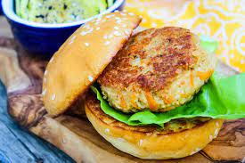

Tofu Burger!

This is a decription of a Tofu Burger. There are lots of ingredietns needed to make it taste good. Belwo you will find a list of them.
Ingredients
- Tofu
- Soy Souce
- Siracha Sauce
- Maple Syrup
- Olive Oil
- Lemon Juice
- Mayonaisse
- Burger Stack
Instructions
- Mix together soy sauce, siracha, maple syrup, and olive oild to create a marinade
- Cover tofu with marinade and let sit for 20 mins on both side
- Meanwhle combine siracha, lemon juice, and mayo to make a sauce.
- Once marinated, grill tofu for 8 mins on each side
- Build burger with tofu, mayo based sauce, and rest of the burger stack
- Serve with sweet potatoe fries and enjoy!